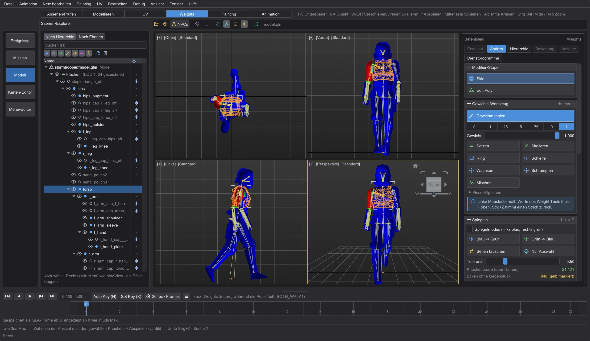
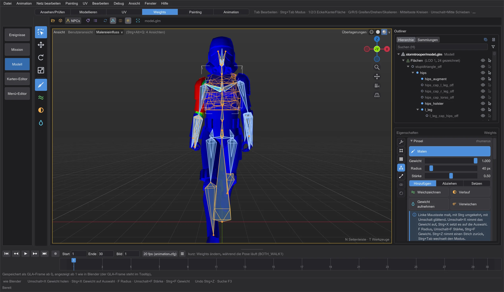
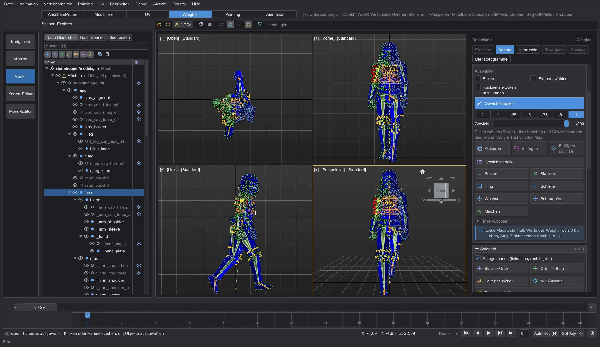

Model-Tab: Weights
Die Knochengewichte eines Modells malen und bearbeiten, während die Animation weiterläuft - mit den Werkzeugen von 3ds Max oder von Blender, je nach Bedienmodus. Eine Seite über Flächen hinweg auf die andere spiegeln, Knochen sperren und jederzeit sehen, ob das Modell in die Grenzen des Spiels passt.
Das Feld rechts#
Einen Knochen im Szenen-Explorer oder in der Gruppe Knochen wählen; das Modell zeigt dann seine Gewichte von Blau (0) bis Rot (1), und die Knochen sind zu sehen. Wie 3ds Max zeigt das Befehlsfeld im Reiter Ändern die Gruppen Modifier-Stapel, Gewichts-Werkzeug, Spiegeln, Automatisch (Auto-Skin), Knochen, JKA-Grenzen und zugeklappt Erweiterte Parameter. Wie Blender zeigt der Eigenschaften-Editor im Reiter Daten Pinsel, Optionen, Bereinigen, Spiegeln, Automatisch (Auto-Skin), Knochen und JKA-Grenzen. Jede Funktion steht auch in der Suche aller Aktionen (X, wie Blender F3) und im Rechtsklick der Ansicht unter Gewichts-Werkzeuge.


Malen#
Der Hauptknopf Gewichte malen (wie Blender: Malen) schaltet das Malen an und aus. An malt die linke Maustaste das Gewicht des gewählten Knochens; aus wählt sie aus - Ecken auf der Ebene Ecke (1) - für die Werkzeuge, die auf einer Auswahl arbeiten. Der Pinsel fügt hinzu, zieht ab, glättet oder setzt das Gewicht; wie Blender gibt es dazu Verlauf (eine Strecke ziehen: an ihrem Anfang das ganze Gewicht, an ihrem Ende nichts, linear oder radial) und Verwischen (zieht die Gewichte mit dem Pinsel mit). Wie 3ds Max stehen diese sowie Radius, Stärke und das Spiegeln beim Malen unter Pinsel-Optionen. Mit Auto-Normalisieren (wie 3ds Max: Normalisieren, ab Werk an) ergeben die Gewichte einer Ecke immer 1: der gemalte Knochen behält seinen Wert, die übrigen teilen sich den Rest. Ein Strich ist ein Rückgängig-Schritt.
Im Blender-Modus gelten die Tasten aus Blenders Weight Paint: ein Strich mit Strg zieht ab, mit Umschalt glättet er; Umschalt+X nimmt das Gewicht unter der Maus auf (Gewicht aufnehmen), Strg+X setzt es auf die Auswahl; F, Umschalt+F und Strg+F ziehen Radius, Stärke und Gewicht - ein Klick übernimmt, Esc oder Rechtsklick bricht ab.
Gewichts-Werkzeug und Bereinigen#
Wie das Weight Tool von 3ds Max: ist das Malen aus, setzen die Festwerte 0 bis 1 das Gewicht des gewählten Knochens sofort auf die gewählten Ecken; Skalieren multipliziert es mit dem Skalierfaktor (ab Werk 0,95), Mischen gleicht die gewählten Ecken an ihre Nachbarn an, und Ring, Schleife, Wachsen und Schrumpfen erweitern oder verkleinern die Auswahl (Ring und Schleife laufen über Vierecke; ein Netz aus Dreiecken wird dafür zu Vierecken gepaart, ohne das Modell zu ändern). Die Bereinigen-Befehle von Blender - Alles normalisieren, Säubern, das Glätten aller Knochen und Begrenzen: 4 - gelten jeder Ecke, oder den gewählten, wenn Ecken gewählt sind; wie 3ds Max stehen sie in Erweiterte Parameter als Alles normalisieren, Null-Gewichte entfernen und Knochen je Ecke: 4. Ecken an derselben Stelle - an einer UV-Naht oder wo zwei Flächen aneinanderstoßen - bekommen immer dieselben Gewichte, damit das Netz in der Bewegung nicht reißt.
Spiegeln#
Knochen werden über ihre Namen gepaart (lhumerus und rhumerus), Ecken über ihre Lage, über Flächen hinweg - in JKA sind linker und rechter Arm eigene Flächen. Die Tabelle der Gruppe zeigt die Knochenpaare, die Ecken ohne Gegenstück und die Flächen, die einander spiegeln; Toleranz sagt, wie weit ein Gegenstück vom gespiegelten Ort liegen darf. Wie 3ds Max markiert Spiegelmodus (links blau, rechts grün) die Ecken in der Ansicht (gelb: kein Gegenstück), Blau -> Grün und Grün -> Blau kopieren eine Seite auf die andere, Seiten tauschen tauscht sie, und Nur Auswahl beschränkt alle drei auf die gewählten Ecken. Wie Blender spiegelt Gruppe spiegeln den gewählten Knochen und Alle Gruppen alle Knochen, mit Gewichte spiegeln und Namen tauschen (L<->R): ohne Auswahl von Ecken tauschen beide Seiten, mit einer bekommt die gewählte Seite die andere. Topologie-Spiegeln findet die Gegenstücke über den Aufbau des Netzes, wenn seine Hälften gleich gebaut sind, aber nicht genau gleich liegen. Nach dem Spiegeln nennt die Meldung eine Fläche, die jetzt mehr Knochen benutzt, als das Spiel liest (32).

Knochen, Sperren und die Grenzen des Spiels#
Die Gruppe Knochen zeigt den gewählten Knochen und die Pose (Sequenz und Bild); die Animation läuft weiter, während man arbeitet. Sperren sperrt den gewählten Knochen: kein Pinsel und kein Befehl ändert seine Gewichte, und das Normalisieren arbeitet um ihn herum. Gesperrte Knochen stehen als Liste mit einem x zum Entsperren da; Sperren (wie Blender: K) öffnet das Menü, das alle Knochen, den gewählten oder alle anderen sperrt oder entsperrt. Knochen zeigen schaltet die Knochen in der Ansicht; in diesem Bereich sind sie ab Werk an. Die Gruppe JKA-Grenzen zeigt als Balken, was das Spiel liest: Ecken und Knochen je Fläche (der gewählten Fläche, sonst der, die der Grenze am nächsten kommt) und die meisten Gewichte an einer Ecke. Übernehmen (4 Gewichte, normiert) schreibt die gemalten Gewichte so ins Modell, wie das Spiel sie liest: die vier größten, normiert, in 10 Bit.
Speichern, Detailstufe und Strg+Z beim Malen#
Speichern schreibt die Gewichte, die die Ansicht zeigt, auch solange Mallisten offen sind (nach dem Malen oder einem Befehl dieses Bereichs, vor Übernehmen (4 Gewichte, normiert)): Die Datei bekommt die vier Gewichte je Ecke, die die Pose zeigt, normiert, wie das Spiel sie liest, und die Mallisten bleiben zum Weitermalen offen. Die Prüfung vor dem Speichern und die JKA-Grenzen im Modellieren messen dasselbe. Mit Nur ausgewählte Flächen und Danach spiegeln spiegelt Auto-Skin nur in die gewählten Flächen: um einen Arm auf den anderen zu spiegeln, beide wählen.
Malen und die Befehle dieses Bereichs gelten der gezeigten Detailstufe (mit Auto folgt sie dem Zoom); die anderen Stufen behalten ihre Gewichte - nur Auto-Skin gewichtet alle Stufen. Solange ein Strich, ein Verlauf, ein Zug oder ein Werkzeugkästchen offen ist, behält die Ansicht die Stufe, in der er begann, auch wenn das Rad zoomt; die neue Stufe folgt nach dem Loslassen. Eine Auswahl von Ecken, Kanten oder Vielecken gehört zu ihrer Stufe: Nach einem Stufenwechsel ist sie leer, und sie ist wieder da, wenn die Ansicht zu dieser Stufe zurückkehrt und ihr Netz inzwischen nicht geändert wurde (Gewichte malen zählt nicht). Strg+Z bei gehaltener Maustaste beendet den offenen Strich, Verlauf oder Zug und nimmt ihn zurück; Strg+Y bringt ihn wieder.